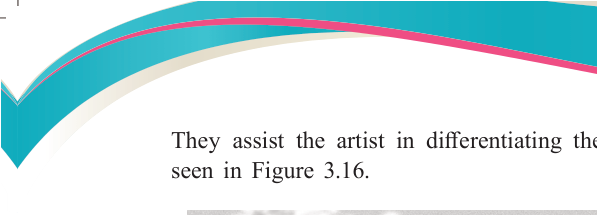
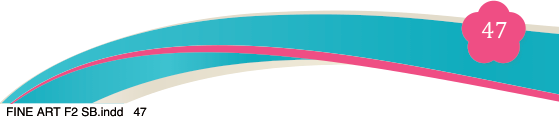
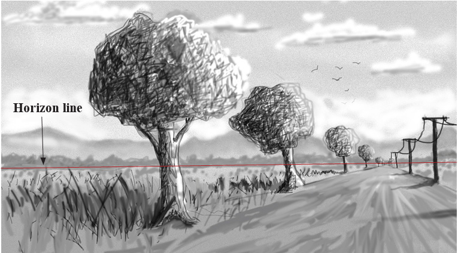
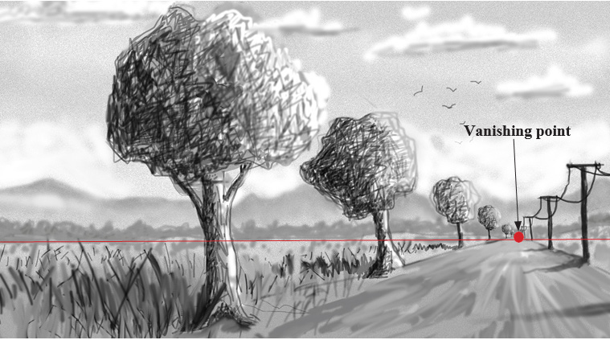

Fine Art for Secondary Schools

47


Student’s Book Form Two
They assist the artist in differentiating the sky and the ground level as

seen in Figure 3.16.

Figure 3.16: Horizon line or eye level
(ii) Vanishing point
A vanishing point is a point on a horizon line where all the lines moving back into space meet. These points can be one, two or three depending on the nature of the subject. It can be observed on a straight long road, a series of houses in a street or on a row of electric poles, when standing beside and
above long buildings. Vanishing point is used as a guide to placing objects in
a composition in the way we see them. For example, electric poles size tends
to look bigger when they are close to the observer and look smaller when far from the observer as illustrated in Figure 3.17.

Figure 3.17: Vanishing point
04/08/2025 13:54